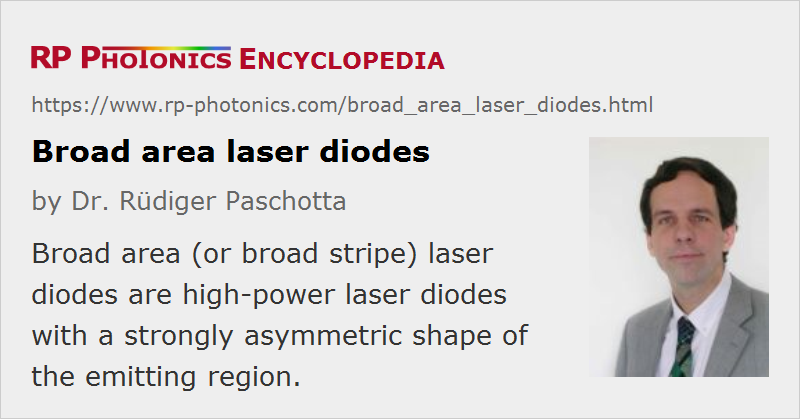

Broad Area Laser Diodes
Definition: laser diodes with a strongly asymmetric shape of the emitting region
Alternative terms: broad stripe emitters, high-brightness diodes
More general term: laser diodes
German: Breitstreifen-Laserdioden
Categories: optoelectronics, lasers
How to cite the article; suggest additional literature
Author: Dr. Rüdiger Paschotta
Broad area laser diodes (also called broad stripe or broad emitter laser diodes, single-emitter laser diodes, and high brightness diode lasers) are edge-emitting laser diodes where the emitting region at the front facet has the shape of a broad stripe (see Figure 1), with dimensions of e.g. 1 μm × 100 μm. Due to the asymmetry of the emitter, the beam properties are also completely different for the two directions:
- In the vertical (short) direction, the height (e.g. 1 μm) is small enough to obtain single-mode guidance and thus an essentially diffraction-limited beam quality with an M2 factor only slightly above 1. Because of the small aperture size, the beam divergence in this direction is relatively high, with a beam divergence half-angle of e.g. 370 mrad, corresponding to an FWHM angular range of 25°. Due to that fast divergence, this is called the fast axis direction.
- In the long direction (slow axis direction), the stripe width may be e.g. 50, 100, 200 μm, or even larger, so that the light is distributed over many spatial modes in this direction. As a result, the beam divergence is much larger than for a diffraction-limited beam with that size, although still significantly smaller than for the fast axis direction. (Typical values are around 5–10° FWHM.) The beam quality in terms of focusability is reduced; M2 might be of the order of e.g. 20 for a 100-μm stripe. Furthermore, the beam profile may be multi-peaked in the horizontal direction, and the shape of the intensity pattern may depend on the injection current.
The wavefronts at the output facet are approximately plane in horizontal and vertical direction, but there can be some astigmatism, i.e., a slightly different focus position for the two directions.
The broader the stripe, the higher is the achievable power, but the worse is the beam quality in the “slow” direction. The technological trend is to obtain higher and higher powers even from narrow stripes, but this is limited by the high optical intensity at the front facet (which can lead to catastrophic failure) and possibly by thermal issues. Special techniques of facet passivation can be used to allow for higher powers. For a 100 μm wide aperture, the output power of a commercial device is typically a few watts or up to the order of 10 W.
The strongly asymmetric beam profile and the large divergence in the “fast” direction requires special care, e.g. for properly collimating the output of a broad area laser. A common method is the use of a cylindrical “fast axis collimator” lens with high numerical aperture in close proximity to the diode facet. Such a lens collimates the beam in the fast axis direction, before the beam radius becomes too large. A second cylindrical lens at a larger distance may then be used for collimation in the slow axis direction. By choosing lenses with suitable focal lengths, a circular beam can be obtained, which however will have different divergence angles in the two directions due to the different beam quality values.
The laser resonator is in most cases monolithic, with reflections from dielectric coatings on the end faces of the semiconductor chip. In less common cases, a gain chip with an anti-reflection coating on one side is used in an external laser resonator (→ external-cavity diode lasers).
Broad area laser diodes are often used for pumping solid-state lasers. A device with a 200-μm broad emitter may emit e.g. 2–4 W, so that the pumped laser may emit up to ≈ 2 W. The laser diode is often mounted on a thermoelectric cooler, which makes it possible to tune the emission wavelength within a few nanometers, so that the emission peak can be matched to the absorption maximum of the laser crystal.
Special Features
Some diode bars are offered with special features:
- A fast axis collimation lens may be integrated into the laser package. This is helpful, since the alignment tolerance for external mounting would be tight. There are also laser diode modules with built-in beam collimation in both directions.
- A built-in Bragg grating can stabilize the emission wavelength and make the emission spectrum significantly narrower. The same could also be achieved with an external volume Bragg grating.
- There are tapered laser diodes, having a region where the width and thus the area of the active region is significantly increased along the propagation direction. Due to a straight region with smaller width, the beam quality and radiance (brightness) achieved are better than in a laser diode with the maximum width along the whole active region. Therefore, such diodes are often called high brightness laser diodes.
Tapered Amplifier Devices
As an alternative to a broad area diode laser, one can use a tapered amplifier either as part of a MOPA device or as an external-cavity diode laser. With that technology, one can obtain similar output powers in conjunction with much better beam quality.
Comparison with Diode Bars
The combination of several broad area emitters in a single device leads to a diode bar, which can emit tens of watts or even more than 100 W of optical power. However, a diode bar has a lower brightness than a single-emitter laser, despite the higher output power, because the beam quality is much lower. For that reason, the design of a diode-pumped laser is generally simpler when using broad-area diodes for pumping. Even for high-power lasers, including high-power fiber lasers and amplifiers, pumping with a significant number of broad-area lasers instead of fewer diode bars has some advantages. One of those is that broad-area diode lasers, other than diode bars, can usually be turned on and off fairly often without shortening the lifetime.
Suppliers
The RP Photonics Buyer's Guide contains 18 suppliers for broad area laser diodes. Among them:
Questions and Comments from Users
Here you can submit questions and comments. As far as they get accepted by the author, they will appear above this paragraph together with the author’s answer. The author will decide on acceptance based on certain criteria. Essentially, the issue must be of sufficiently broad interest.
Please do not enter personal data here; we would otherwise delete it soon. (See also our privacy declaration.) If you wish to receive personal feedback or consultancy from the author, please contact him e.g. via e-mail.
By submitting the information, you give your consent to the potential publication of your inputs on our website according to our rules. (If you later retract your consent, we will delete those inputs.) As your inputs are first reviewed by the author, they may be published with some delay.
Bibliography
| [1] | R. J. Lang et al., “Spontaneous filamentation in broad-area diode laser amplifiers”, IEEE J. Quantum Electron. 30 (3), 685 (1994), doi:10.1109/3.286155 |
| [2] | H. Adachihara et al., “Spatiotemporal chaos in broad-area semiconductor lasers”, J. Opt. Soc. Am. B 10 (4), 658 (1993), doi:10.1364/JOSAB.10.000658 |
| [3] | A. Jechow, V. Raab and R. Menzel, “Tunable 6.8 W narrow bandwidth emission from a single-stripe continuous-wave broad-area laser diode in a simple external cavity”, Appl. Opt. 47 (10), 1447 (2008), doi:10.1364/AO.47.001447 |
| [4] | J. Piprek, “Inverse thermal lens effects on the far-field blooming of broad area laser diodes”, IEEE Photon. Technol. Lett. 25 (10), 958 (2013), doi:10.1109/LPT.2013.2255590 |
| [5] | V. Svetikov et al., “Selection of high-order lateral modes in broad area laser diode by digital planar hologram”, J. Opt. Soc. Am. B 30 (3), 610 (2013), doi:10.1364/JOSAB.30.000610 |
| [6] | M. Niebuhr et al., “Mode stabilization of a laterally structured broad area diode laser using an external volume Bragg grating”, Opt. Express 23 (9), 12394 (2015), doi:10.1364/OE.23.012394 |
| [7] | L. Wang et al., “Loss tailoring of high-power broad-area diode lasers”, Opt. Lett. 44 (14), 3562 (2019), doi:10.1364/OL.44.003562 |
See also: laser diodes, diode bars, semiconductor lasers, beam quality, tapered amplifiers, high brightness laser diodes
and other articles in the categories optoelectronics, lasers
|  |
If you like this page, please share the link with your friends and colleagues, e.g. via social media:
These sharing buttons are implemented in a privacy-friendly way!